My name is Christine. I'm a really quiet person, so it's hard for me to speak up in a new environment. When you really get to know me, I love to read, watch TV, eat food, play games, learn Chinese, and most importantly spend time with my family. Here some of my top recent Webtoon reads, TV series, games, and favorite Chinese phrases.
WEBTOON is a platform that houses over thousands of digital stories of various genres.
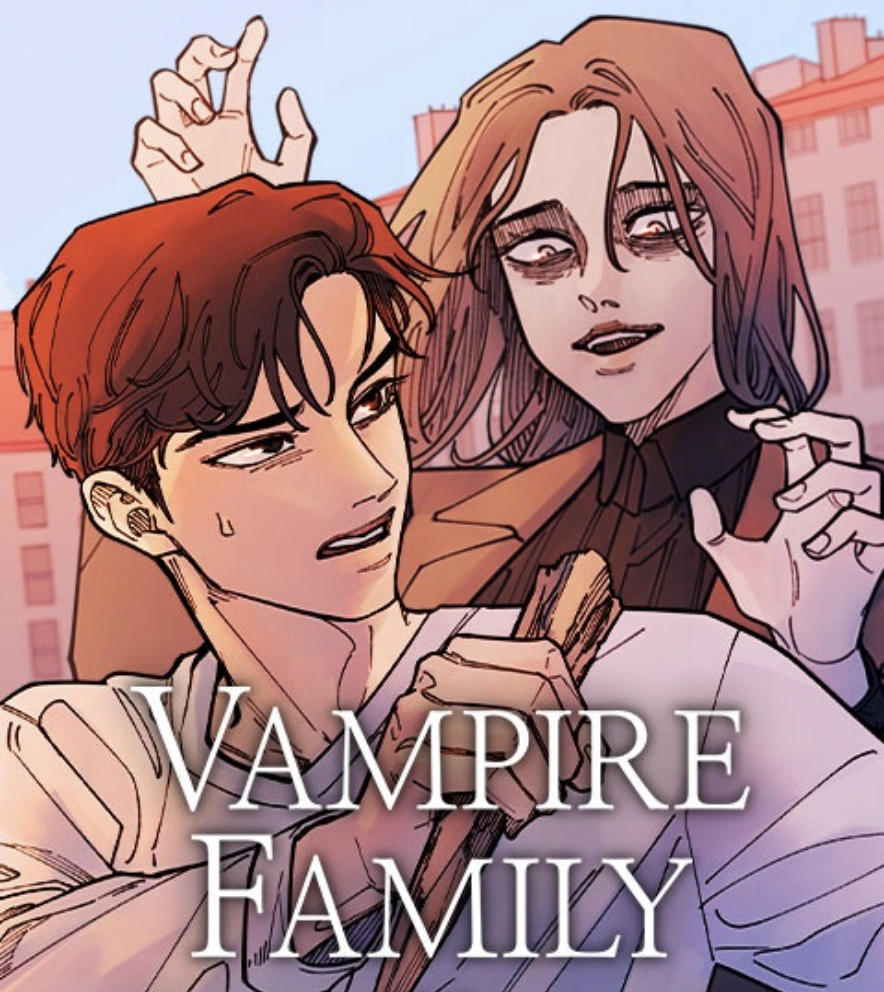
Blurb:
As a family of vampires, the Dragomirs have
long stayed hidden away from humans, but
middle child Natalia longs for one thing: friends.
She's convinced her family to let her go to school,
and has chosen her seat neighbor, Evangelo, to be her first friend.
But he is not your typical student either…
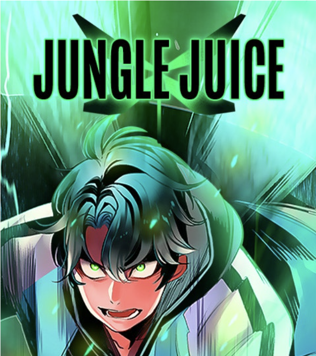
Blurb:
Suchan Jang is an extraordinary college student
at the top of the social food chain. But underneath
the perfect facade, he hides a pair of insect wings that
suddenly grew when he used a mysterious bug spray
called "Jungle Juice.” Suchan's life crumbles when he
bares his wings to the world to save someone's life.
When all hope seems lost, Suchan stumbles upon a
hidden world of insect humans where everyone is
accepted for what they are. But the law of the jungle governs
this secret society and all must fend for themselves in order to survive.
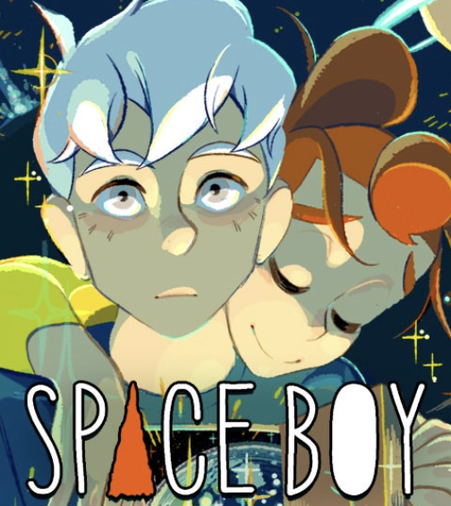
Blurb:
A girl who belongs in a different time.
A boy possessed by an emptiness as deep as space.
A story about an alien artifact, a mysterious murder,
and a love that crosses light years.
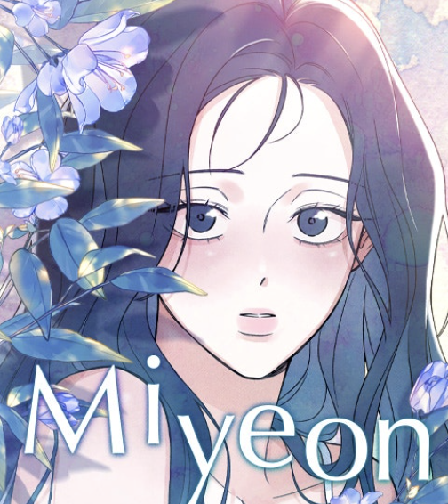
Blurb:
Picture this: It's your final year of high school,
and you can't wait to get out there and live your best life.
You blush at the popular kid, and eye the new transfer
student with bruises on his face. You're looking forward
to the future… Until you wake up in the future, with no
memory of the last six years. Suddenly finding herself as
a 25-year-old aspiring actress, Miyeon Seo begins to
unravel the painful threads of her forgotten past.
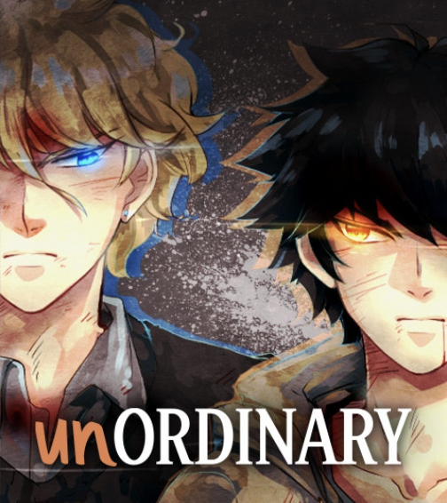
Blurb:
Nobody paid much attention to John - just a normal teenager
at a high school where the social elite happen to possess
unthinkable powers and abilities. But John's got a secret
past that threatens to bring down the school's whole
social order - and much more. Fulfilling his destiny
won-t be easy though, because there are battles, frenemies
and deadly conspiracies around every corner.
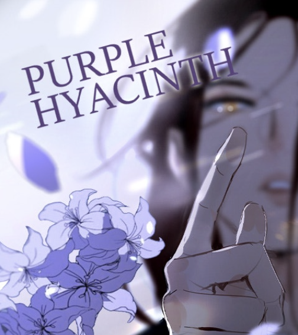
Blurb:
Her ability to detect lies has made her an outstanding
officer of the law - despite being haunted by her inability
to save the ones she loved from a gruesome fate many
years ago. Now, she uses her powerful gift to defend the
defenseless at any cost - even if it means teaming up
with a deadly assassin to fight evil in a world gone mad.
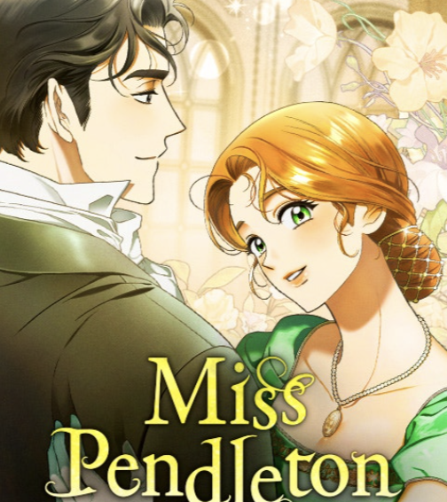
Blurb:
If love is the ultimate prize, then the perils of courtship
are the necessary trials and tribulations one must endure
in its pursuit. It is a blessing for the society debutantes
of London, then, that Cupid's arrow should be guided by
the dainty hand of Miss Laura Pendleton, granddaughter
of Countess Pendleton and the city's finest matchmaker.
When Laura's self-ascribed duties call her to befriend
the stoic and saturnine Mr. Ian Dalton of Whitefield,
however, she soon finds that when it comes to the grand
contest of love, it may well be every woman for herself…
Here are a few of my recent shows that I highly recommend on Netflix.
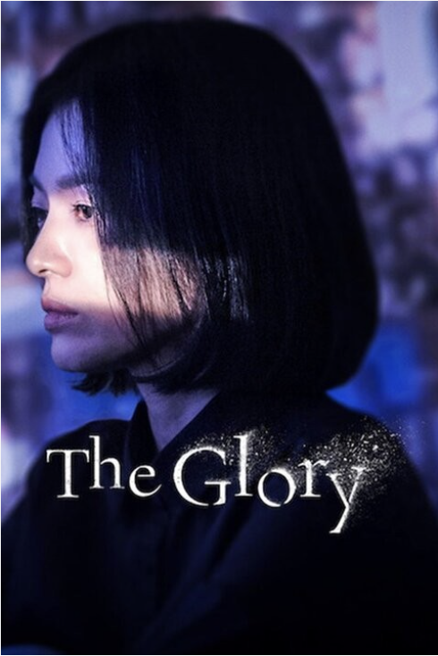
Blurb:
After surviving horrific abuse in high school,
a woman puts an elaborate revenge scheme in motion
to make the perpetrators pay for their crimes.
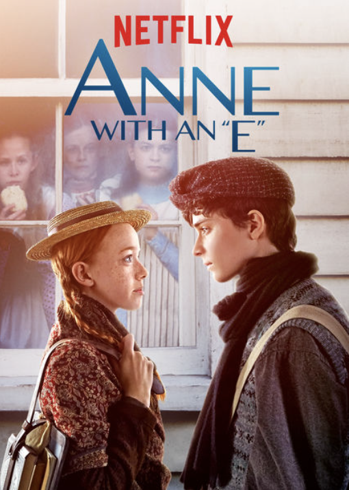
Blurb:
A plucky orphan whose passions run deep finds an
unlikely home with a spinster and her soft-spoken
bachelor brother. Based on "Anne of Green Gables."
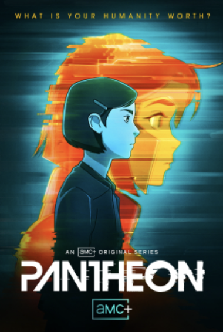
Blurb:
A pair of troubled teenagers discover their personal
connections to a revolutionary new technology come
with a high human cost.
Here are recent games that I highly recommend on PlayStation.
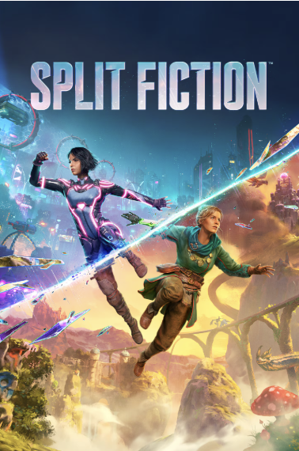
Blurb:
In Split Fiction, you and your co-op partner will become
Mio and Zoe, two writers trapped in a simulation of their
own imaginations after a high-tech attempt to steal their
creative ideas goes badly wrong. This pair of strangers will
need to learn to work together in order to escape with their
memories and stories intact. Prepare to deal with dragons
and trolls in Zoe's fantasy worlds and cyber ninjas and
robo-parking attendants in Mio's sci-fi creations.
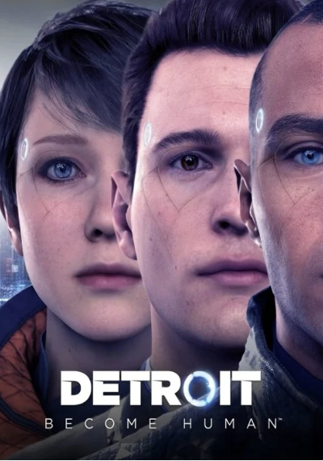
Blurb:
Set in Detroit City during the year 2036, the city
has been revitalized by the invention and introduction
of Androids into everyday life. But when Androids
start behaving as if they are alive, events begin to
spin out of control. Step into the roles of the story's
pivotal three playable characters, each with unique
perspectives as they face their new way of life.
Chinese, also known as Mandarin, is a language that consists of characters, pinyin, and tone marks. For example, Chinese character is 汉字, the pinyin is hànzì. Characters are like symbols that represent a word. Pinyin is the system to pronounce characters and tone marks are marks above a character's pinyin that let you know in what tone you should pronounce a character. I often read translated Chinese novels and many of them set in Ancient China with lots of scheming and family drama. Here are a few of my favorite idioms.
Pinyin: shā jī jǐng hóu
Translation: Killing the chicken to warn the monkey.
Meaning: Punishing one to deter others.
Pinyin: dǎ cǎo jīng shé
Translation: Striking the grass to scare the snake.
Meaning: Making a move that could alert others prematurely.
Pinyin: jǔ yī fǎn sān
Translation: Learn one and infer three.
Meaning: Quick thinking and the ability to learn efficiently.